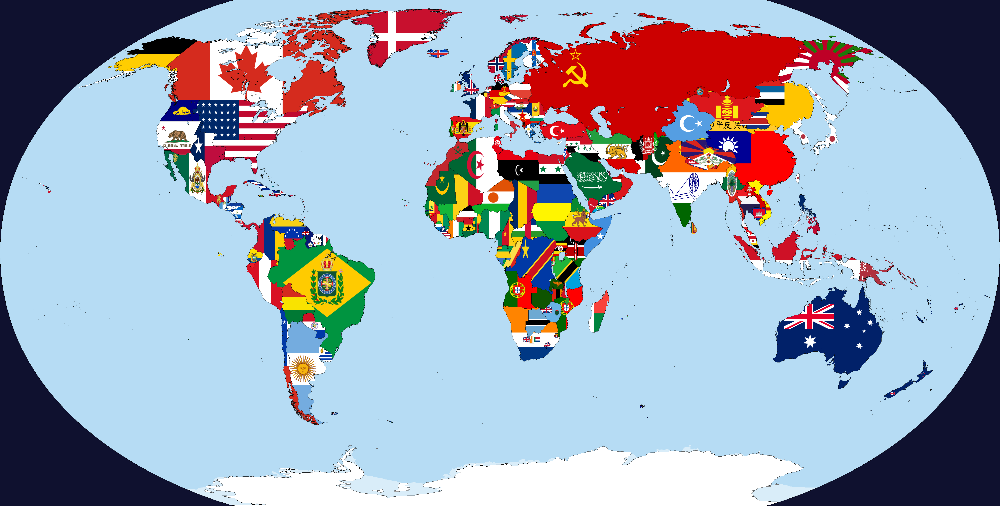
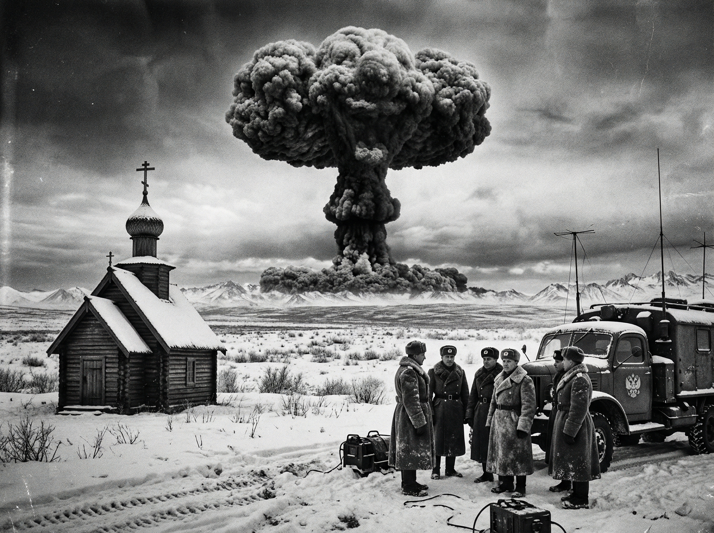
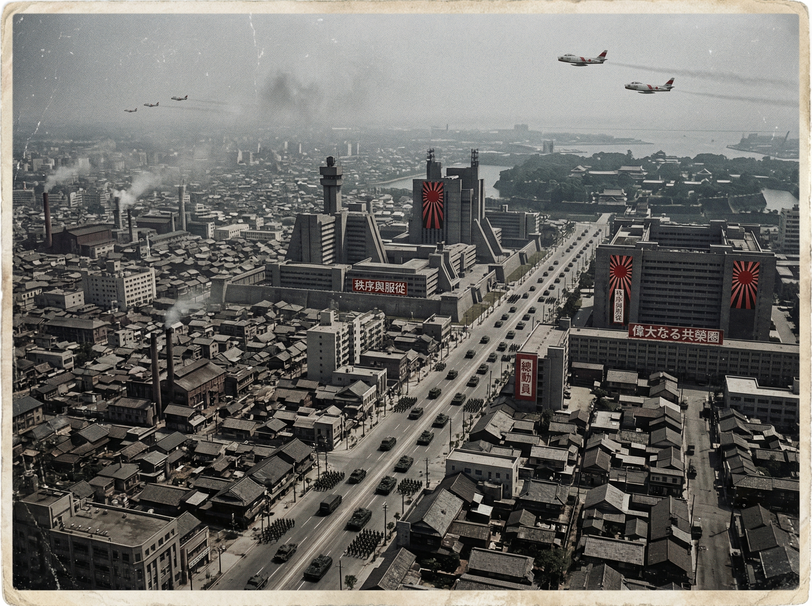
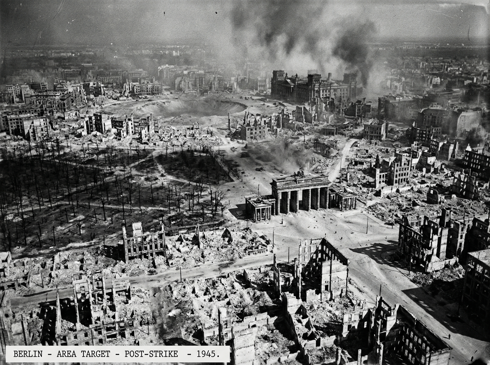

El Mundo Dividido en Tres Bloques (1955)

Situación Geopolítica tras la Paz de Tokio: El Imperio Japonés domina el Pacífico, la URSS controla Eurasia y el Eje Anglo-Americano domina el Atlántico.
Bloque Atlántico
Liderado por el Reino Unido y EE. UU. Tras la destrucción atómica de Berlín en 1945, aseguran Europa Occidental pero se retiran del Pacífico ante el agotamiento bélico.
Bloque Soviético
La URSS se expande por Europa Oriental. En 1949, logran la bomba atómica gracias al espionaje, equilibrando el poder mundial frente a Londres y Tokio.
Imperio del Japón
Vencedores indiscutibles en el Pacífico. Controlan China, el Sudeste Asiático y las Filipinas. Su arsenal nuclear propio disuade cualquier intento de reconquista aliada.
La Independencia de Oregón
En este periodo, el noroeste del Pacífico (Oregón y Washington) abandona su estatus colonial británico para convertirse en una nación independiente dentro de la Commonwealth, sirviendo como puerto neutral entre el Bloque Atlántico y el Bloque Panasiático.
Alaska Nuclear
Bajo la Dinastía Románov, Alaska desarrolla su propio programa nuclear defensivo para evitar una invasión soviética, convirtiéndose en el cuarto actor atómico del mundo.

Archivo Visual: La Era de la Ansiedad

